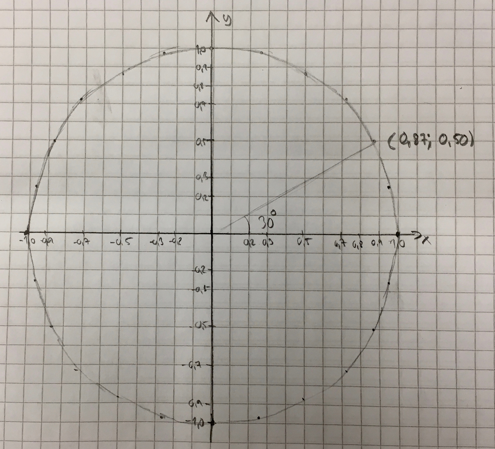
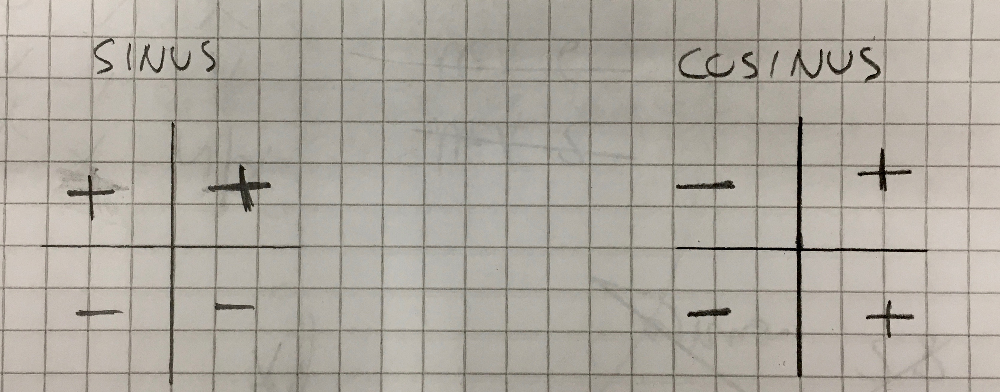

2. Enhetscirkeln
Vi tar och undersöker värden för sinus och cosiuns. Från gammalt kommer du ihåg att sinus får vi som \( \sin \alpha = \dfrac{a}{c} \) och cosinus som \( \cos \alpha = \dfrac{b}{c} \). Vi låter hypotenusan ha värdet 1 och bestämmer kateternas längder för olika vinklar.

Skriv av följande tabell och fyll i den:
| Vinkel | Närliggande katet | Motstående katet |
|---|---|---|
| 0 | 1 | 0 |
| 15 | 0,96 | 0,26 |
| 30 | 0,87 | |
| 45 | ||
| 60 | ||
| 75 | ||
| 90 | ||
| 105 | ||
| 120 | ||
| 135 | ||
| 150 | ||
| 165 | ||
| 180 |
Tag och rita dessa punkter i ett koordinatsystem så att cosinus, närliggande kateten prickas in på x-axeln och sinus, motstående katet prickas in på y-axeln.
Vad händer då vi fortsätter vi med vinklar över 180o? Vad händer då vi fortsätter med negativa vinklar?
Fortsätt med följande värden:
| Vinkel | Närliggande katet | Motstående katet |
|---|---|---|
| 195 | ||
| 210 | ||
| -15 | ||
| -30 | ||
| -45 |
Du märker att vi får fram något som ser ut som en cirkel. I denna cirkel får vi fram värdena för sinus och cosinus då hypotenusan har värdet 1. Vidare ser vi att för olika vinklar får vi samma värden.
Dessa samband är en väsentlig del av trigonometrin. Cirkeln som vi har fått fram kallas för enhetscirkel.
Uppgifter
- Gör tabellen över längden för närliggande katet och motstående katet då hypoetnusan har längen 1 för vinklarna som är listade ovan. Fortsätt med negativa värden och pricka in punkterna i ett koordinatsystem så att cosinus, närliggande katet prickas in på x-axeln och sinus, motstående katet prickas in på y-axeln.
Vi får något i stil med

En bra figur får du om du låter en ruta motsvara 0,1.
- Vi talar om att de trigonometriska funktionerna har teckenschema. Det betyder om de är positiva eller negativa i en viss kvadrant, område i koordinatsystemet. Rita två koordniatsystem (ett för sinus, det andra för cosinus) i ditt häfte och bestäm teckenschemat för sinus och cosinus genom att bestämma förtecknet för koordinaten och skriv plus eller minus i rätt kvadrant.
Vi bara tittar på förtecknet. För vinkeln 30o har vi koordinaten \( (0,87; 0,50) \). Då är både \(x\)- och \(y\)- koordinaterna positiva. För vinkeln 120o har vi koordinaten \( (-0,50; 0,87) \). Då är \(x\)-koordinaten negativ och \(y\)- koordinaten positiv.
När vi gör motsvarande för vinklar i alla 4 kvadranter får vi följande teckenschema.
